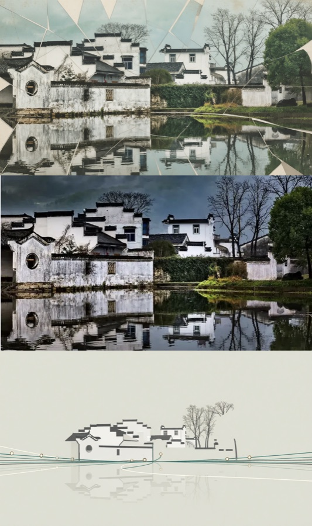
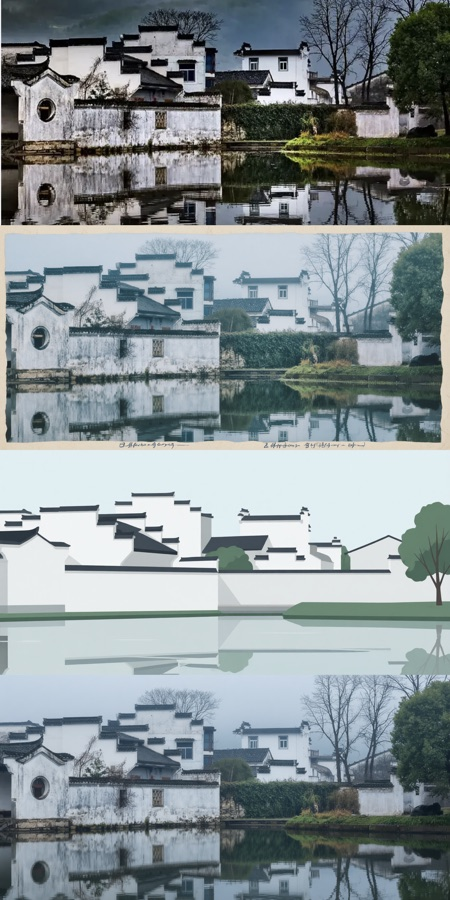
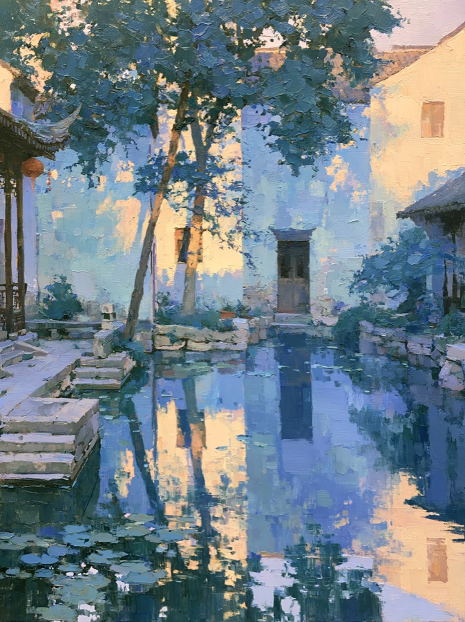
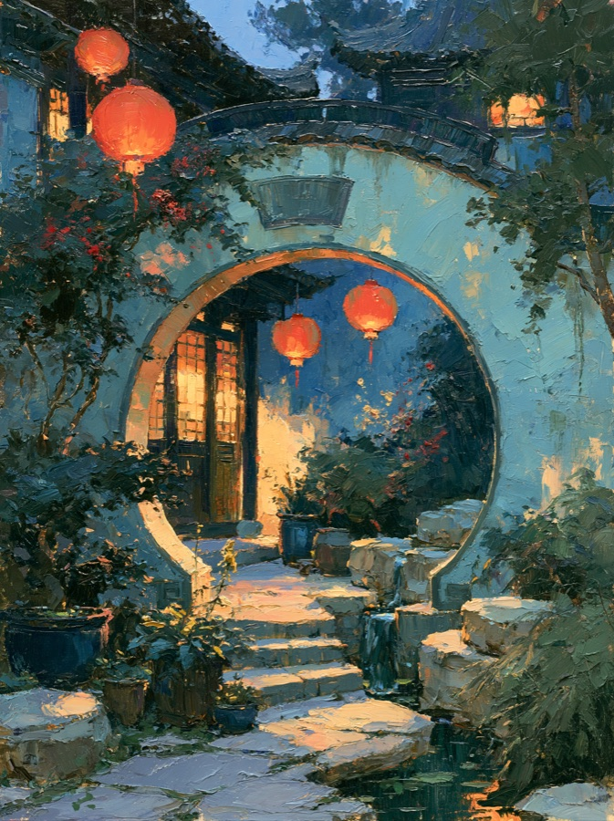
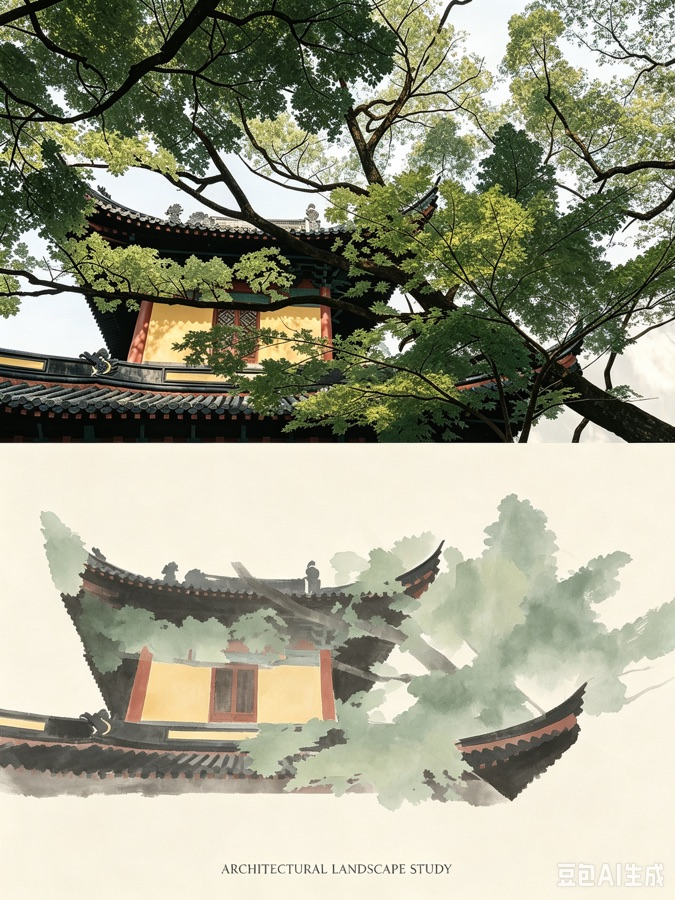
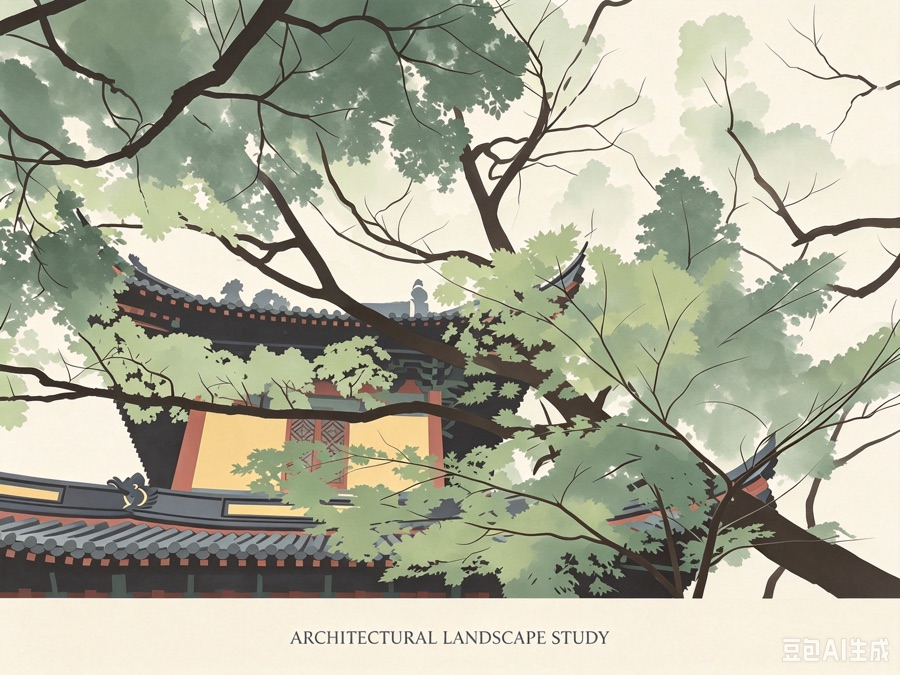
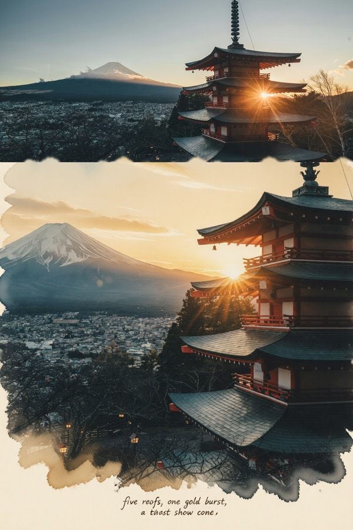
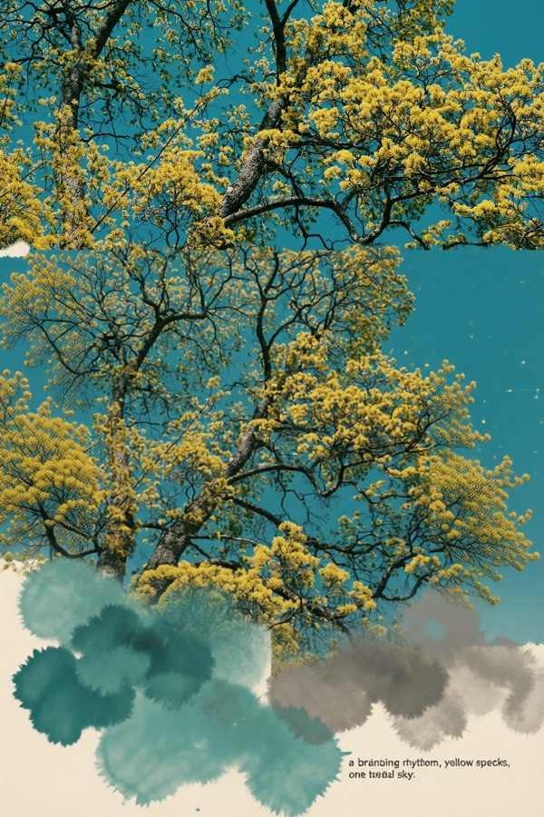
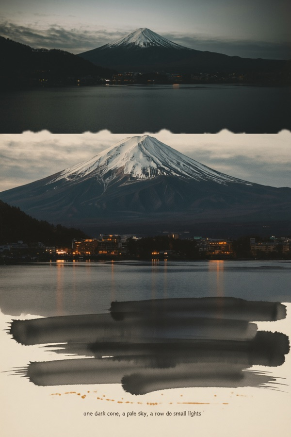
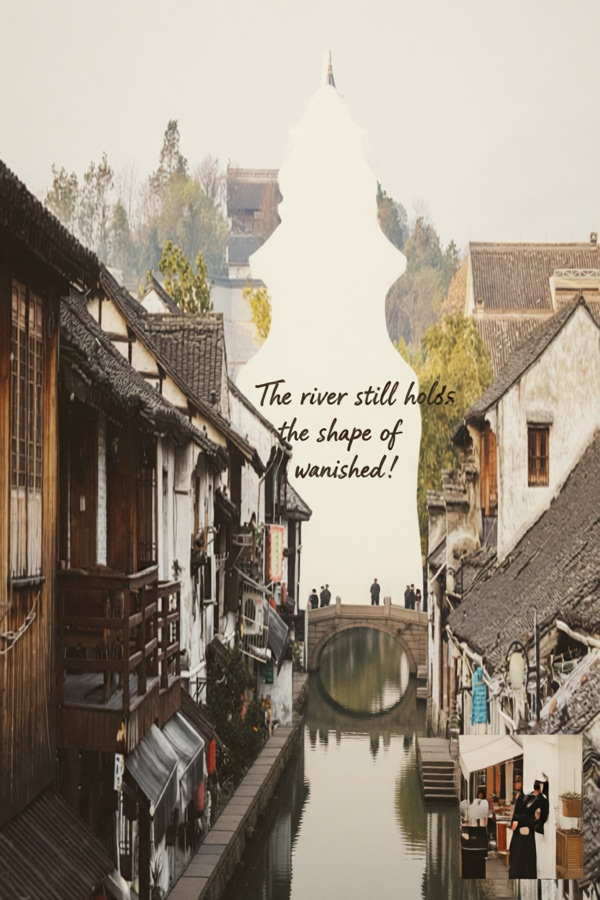

作品
Selected Plates









色彩与明暗，是我一直在练的东西。
画一张画要考虑主光源、明暗交界、冷暖关系与视线落点；这恰好也是舞台灯光在做的事。所以「画得好」这件事，和灯光组要的「用色彩与明暗打造视觉空间」，是同一套能力。
AI Illustration · Jiangnan Series
用提示词画下的水乡、园林与月洞门
这一册是我的 AI 绘画原作。以「写意江南·印象」为主要风格基底，用提示词控制构图、光影与情绪，再以「三段式记忆」「抽象四联」这类方法把单张画面组织成可延展的系列——所以它不是一堆散图，而是一本有编目的画册。










画一张画要考虑主光源、明暗交界、冷暖关系与视线落点；这恰好也是舞台灯光在做的事。所以「画得好」这件事，和灯光组要的「用色彩与明暗打造视觉空间」，是同一套能力。